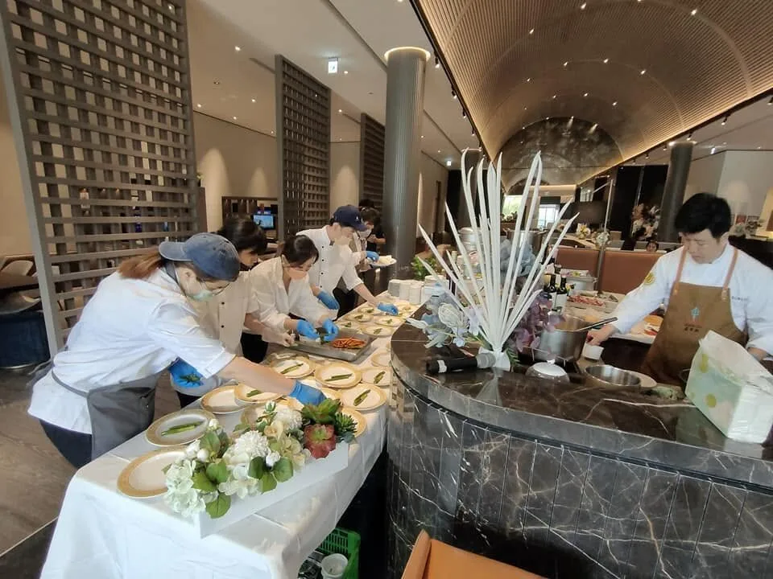

豪宅場合是到府私廚很經典的應用場景，主廚團隊能將高規格的用餐體驗完整帶入私人空間。
舒苑過去服務過多處知名豪宅社區，熟悉保全登記流程、電梯動線與廚房設備規格，能有效率地完成前置準備。
豪宅宴客通常重視隱私，可依需求簽署保密協議，同時維持餐點與服務的高端規格，詳見豪宅家宴價格參考。
許多豪宅住戶最終選擇在家宴客而非餐廳包廂，主要是考量隱私——高端客群往往不希望重要商務或家族聚會的細節外流，而私人住宅的封閉空間，能完全避開這個顧慮，同時保留高規格的用餐體驗。
高端社區通常有較嚴謹的訪客登記與貨梯使用規範，舒苑團隊過往服務過多處知名豪宅社區，熟悉常見的保全登記流程與器材進出動線，會提前與客戶確認社區規定，並準備好必要的證件與清單資料，避免當天因為流程卡關而延誤服務。
豪宅本身的空間條件往往已經很出色，菜色與服務規格需要與之相襯——從食材等級（和牛、龍蝦、松露等）、擺盤設計到桌邊服務的細膩度，團隊會依整體居家風格與賓客組成，規劃出與空間調性一致的完整體驗，而不只是單純把餐廳的菜色搬進家裡。
若場合涉及商務貴賓或需要更高規格的隱私保障，可依需求簽署保密協議，服務人員也會被告知相關的應對分寸。人數規模上，豪宅宴客從私人晚宴（4-8人）到中大型酒會（20人以上）都能因應，建議提前告知場地格局，以便團隊規劃合適的服務動線。
豪宅宴客建議以無菜單料理或 Fine Dining 分道套餐呈現，主餐可選用和牛、龍蝦、松露等頂級食材，搭配侍酒師配酒服務提升整體規格；若是商務性質的宴客，也可加入具話題性的擺盤設計，作為賓客之間的交流亮點。
提供活動日期、人數與場地，我們將提供最適合的私廚方案與報價建議。